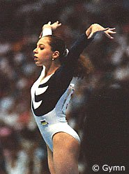

Tatiana Lysenko (USSR/UKR)
1990 World Cup AA Champion
1992 Olympic B
Champion

|
Medal Total
- Olympic Games: 2 Gold, 1 Bronze
- World Championships: 1
Gold, 2 Bronze
- World Cup: 2 Gold, 1 Bronze
- European Championships: 1 Silver
|
Tatiana was born on June
23, 1975 in Kherson. She was coached by Oleg Ostapenko at Dinamo Kherson.
Her training partners were Natalia Kalinina and
Elena Abrashitova. Tatiana
graduated from the University of San Francisco Law School, passed the California State Bar exam in 2005, and currently works as the PR and IR liaison for Silicon Valley Open Doors. She and her husband have a daughter, Sophia.
Competition Results
- 1989
- Intl. Junior Championships: 2nd AA, 1st V, 1st B, 2nd
FX, 4th UB
Jr. European Team Championships: 1st Team
Jr. Friendship Tournament (Druzhba): 1st Team, 3rd AA, 1st FX
- Jr. GDR-USSR Dual Meet: 1st Team, 1st AA
-
- 1990
- Blume Memorial: 9th AA
- Chunichi Cup: 2nd AA, 1st UB, 2nd FX, 3rd V, 3rd B
- Tokyo Cup: 1st UB
- USA-USSR Dual Meet: 1st Team, 5th AA
- USSR Championships: 4th AA
USSR Cup: 8th AA, 3rd V
- World Cup: 1st AA, 1st UB, 3rd FX, 4th
V, 4th B
-
- 1991
- Blume Memorial: 3rd AA
- USSR Spartakiade: 2nd AA
USSR-ITA Dual Meet: 1st Team, 5th AA
- World Championships (Indianapolis): 1st Team,
13th AA, 8th UB
-
- 1992
- CIS Championships: 1st AA
- CIS Cup: 4th AA, 2nd B
- DTB Cup: 2nd AA, 1st B, 1st FX, 2nd V
- European Championships: 4th AA, 2nd UB,
4th FX, 6th V, 9th UB
- Gander Memorial: 2nd AA
- Olympic Games: 1st AA, 1st B, 3rd V
- Swiss Cup: 2nd AA
- World Championships (Paris): 3rd FX,
6th V (prelims), 7th B, 9th UB
- World Stars: 2nd AA, 3rd FX, 4th UB, 7th
B
-
- 1993
- Birmingham Classic: 3rd AA
- DTB Cup: 3rd V, 4th B, 6th UB
- French International: 2nd B
- Gander Memorial: 3rd AA
- Soapberry World Challenge: 3rd AA
- Swiss Cup: 3rd AA
- University Games: 1st Team, 1st AA, 1st B, 6th FX, 7th
V
- USA-BLR-UKR Tri-Meet: 3rd AA
- World Championships (Birmingham): 3rd AA,
5th UB
-
- 1994
- World Championships (Brisbane): 18th AA, 4th V
This page was last updated on July 19, 2024.
© Gymn Forum